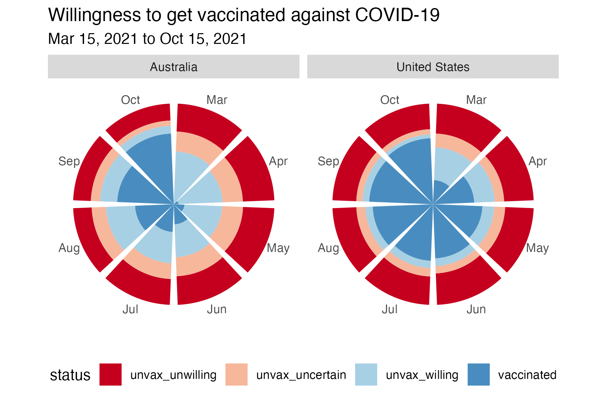

#30dayChartChallenge debrief
Where did April go? The #30DayChartChallenge is all done. As predicted, I didn’t manage to do it every day, but committing to try and make charts related to each of the daily prompts was a super useful exercise in pushing my data visualisation and storytelling skills. You can check out all the plots I made in April at this listing page.
A few takeaways from the exercise…
learning through play
Making charts in the month of April, just for the fun of it, has reminded me about the value of play. Play is how children naturally test ideas, relate to each other, and learn about cause and effect. Play is intrinsically motivating. Children don’t need to be told that play matters; they do it because it feels good. Play is associated with flow, that state of focused, joyful engagement where time disappears and learning feels effortless.
Yet somewhere along the path to adulthood, most of us are conditioned out of playful learning. We internalize the idea that learning should be serious, efficient, and outcome-driven. But when we give ourselves permission to play, perhaps via a challenge like the #30DayChartChallenge, it is possible to remove the pressure. We might bravely try a new chart type we haven’t used before (i.e. ggbump for ranking data) or reimagine a theme in a way that makes us laugh (i.e stars could be Hollywood stars). And through that process, we can learn more deeply, because we are in the moment and not afraid to make mistakes.

learning sticks when it matters
I started the challenge trying to stick to data from Our World in Data, but I found that I learned more when I released myself from that constraint and looked for data that was meaningful to me. Whether it was local temperature data for the stripes plot, data comparing egg prices where I live to prices in the US, or the controversy surrounding the native bird that lives in the lake near my house, I found myself more having more fun when the topic touched my own life or community.
That’s not a coincidence. When we connect learning to something we care about, we activate existing knowledge networks. In cognitive terms, this makes new information easier to integrate. The new learning doesn’t exist in isolation, it’s linked to other associations that we have built over time. In motivational terms, data we care about taps into curiosity and emotional investment. These values are far more powerful drivers of learning than arbitrary goals or practice for the sake of it.
Playing with data that is personally meaningful does more than keep you motivated. It also sharpens your thinking. During the challenge, I asked better questions, told better stories, and was more critical about how the data was presented, when I was working with data that was relevant to my life.


familiar is the foundation
When learning to write code to produce beautiful and meaningful visualisations you can quickly become overwhelmed because everything is new. I have started to realise that it can be helpful to reduce the cognitive load by controlling some variables (the data) while playing with others (the method). Sometimes it can be useful to pick a dataset that you know really well, so your mental energy can go toward grappling with the truly new parts of what you are trying to learn, rather than everything feeling novel all at once.
This worked really well when I was trying out k-means clustering for the first time. Instead of choosing a random or unfamiliar dataset, I used the palmerpenguins dataset, which I had worked with many times before. I already knew the structure of the data, the kinds of patterns to expect, and how the species varied. This meant I could focus entirely on understanding how k-means works and how best to visualise the clusters, rather than trying to learn the method and the data and the context all at once. It was a good reminder that scaffolding new knowledge onto an existing base doesn’t just make learning easier, it also makes it stickier.
However, there is also value in questioning the familiar when learning new visualisation methods. I often encountered data that had been plotted in very familiar ways (points and lines or stacked bars) and rather than simply reproducing it, had to challenge myself to think outside the box to reimagine how a different chart type might tell a better story.
By taking data about vaccine hesitancy in Australia and the U.S. and plotting it using a Florence Nightingale-style “flower” plot, the relative stability of vaccine hesitancy rates in the USA compared to Australia was more obvious, highlighting the impact of differences in public health messaging. Similarly, in plotting measles case rates by state on a map, rather than in a faceted bar plot, the story really stood out. It was the same data, but by layering it onto geography, it is easy to see not only what the problem is, but also where it is, making the story about public health and regional variation more compelling.


These examples taught me that familiarity is a powerful foundation, rather than a limitation. When we use the familiar as a starting point, we give ourselves the stability to take creative risks. We can experiment with new forms, tools, or techniques without being overwhelmed, because we’re not learning everything at once. And sometimes, taking a familiar plot and imagining how the data might be represented differently can reveal things about the data we might have otherwise missed.
plots are not neutral
As I explored different ways of representing data, I was reminded again and again that plots are not neutral. Every design decision we make (scales, colors, chart types, comparisons) will shape how people understand a dataset. That means that we have an ethical responsibility to be intentional, transparent, and honest about the choices we make.
One clear example came from working with data on noise levels during Super Bowl Sunday. The original plot had adjusted the y-axis scale in a way that made the differences in noise between Super Bowl Sunday and a typical Sunday look more dramatic than they really were. When I replotted the data using a regular, evenly spaced scale, the difference was still there, but it was less sensational. This reminded me how easy it is to unintentionally (or maybe intentionally) exaggerate effects through the choices we make, without manipulating the data itself. It is possible for a plot to be technically technically accurate, but misleading.
Similarly, when mapping measles vaccination rates by U.S. state, I experimented with filling each state on the map using either a continuous scale (i.e. exact percentages of vaccine coverage) or categorical groupings (i.e. 95%+, 90-94.9%, less than 90%). The decision wasn’t just aesthetic, it was interpretive. A continuous scale may be more precise, but a categorical one might better serve public communication goals, if we are interested in identifying at-risk states for intervention.

These experiences reinforced the idea that ethical visualisation is about clarity, fairness, and usefulness. Sometimes that means pulling back from precision to focus on communication. Sometimes it means thinking hard about whether you really want to plot to be more striking but less honest. We need to be asking ourselves: Is this visualisation telling the story that most needs to be told, for the people who are most affected by it?
from data to stories
Across the #30DayChartChallenge I have been thinking more and more about storytelling. One example that really brought this home was the story of the Pūteketeke, which won New Zealand’s Bird of the Year competition in 2023 under somewhat chaotic circumstances, largely thanks to a campaign by comedian John Oliver.

The vote rate data clearly portray that something had happened to the competition that year, but by using the closeread package to create a scrollytelling article I was able to combine images, narrative and data visualizations, in a way that slowed down the viewer’s experience, piqued their curiosity and helped them connect the data to the context.
take home
The real magic here isn’t just in making a good-looking plot, it’s in telling a good story. You can learn all the geoms in the world, but if you can’t use them to say something that is useful and memorable, what’s the point? I have learned that turning data into stories with code gives your technical skills purpose, and it is way more fun that just churning out plots all day.
Acknowledgement: Thanks to chatGPT for assistance in crafting this post